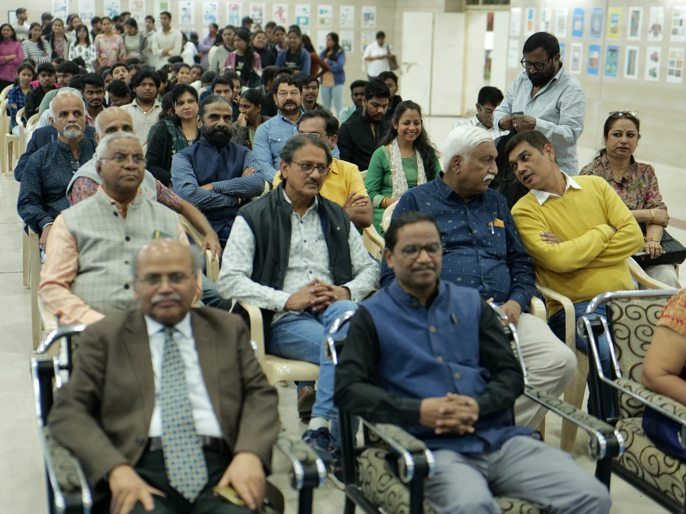

Vernacular Branding
Public Reception
Academic, Cultural, and Institutional Contexts
Developed simultaneously as a long-term documentation project and a contemporary design inquiry, Vernacular Branding continues to actively engage educators, regional practitioners, and major institutions working at the intersections of visual culture, communication, and field research.
The publication is currently being circulated, discussed, and permanently archived in leading academic institutions, serving as a vital primary resource for the ongoing global discourse on informal visual systems and localized graphic identity.




01 — Public Reception
The Book Launch & Presentations
The publication was formally launched and presented across select academic and public settings, initiating critical conversations regarding vernacular design practices and their immediate relevance to contemporary design pedagogy. These milestones and subsequent presentations reflect the project’s deep engagement with foundational institutions, field contributors, and the wider typographic research community.
- Field Synergy: Direct interactions, reviews, and workshops with local sign-making contributors and visual practitioners.
- Host Institution: Government College of Art and Design (GCAD), Nagpur — Formally launched on the historic milestone of the institution’s 50th Anniversary.
- Academic Engagements: Curated presentations, analytical design studios, and panel discussions.
02 — Public Reception
Institutional Library Registry
Vernacular Branding has been formally received by leading academic institutions and officially recognized as a valuable reference contribution to the study of material culture, typography, and visual communication.
College of Fine Arts — Thiruvananthapuram, Kerala, India
“Substantial in its academic relevance, a timely intervention in the discourse on visual culture and design practices, and a worthy reference material for students and pedagogues in art and design.”
— Prof. Manoj Kannan, Principal
→ View full letter (PDF)National Institute of Fashion Technology (NIFT) — Hyderabad, India
“The book offers valuable insights into design research, visual cultures, and contemporary branding practices. Its rich content and unique perspective make it a significant resource for both learning and reference.”
— Prof. Dr. Malini Divakala, Director
→ View full letter (PDF)National Institute of Design (NID) — Jorhat, India
“On behalf of the Director, faculty, staff, and students of NID Assam, I would like to thank you for donating your book… This book will be available in the reference section of the Knowledge Management Centre (KMC), of the Institute.”
— Dr. Tonmay Sabhapandit, Head Librarian
→ View full letter (PDF)Sinhgad College of Architecture — Pune, India
“We appreciate your effort in bringing out this book. The donated copy will be useful for our students and staff, and we will keep it in our library for their use.”
— Dr. P. N. Chitale, Principal
→ View full letter (PDF)Library collection · Frankfurt am Main
Städelschule Bibliothek
A copy of Vernacular Branding is held in this library’s collection.
Library collection · Frankfurt am Main
Deutsches Architekturmuseum Präsenzbibliothek
A copy of Vernacular Branding is held in this library’s collection.
Library collection · Essen
Folkwang Universität der Künste Bibliothek
A copy of Vernacular Branding is held in this library’s collection.
Also in bookshops
Extrabuch, Münster · Pro qm, Berlin
Copies are also available at Extrabuch in Münster and Pro qm in Berlin, and in the Pro qm webstore.
03 — Public Reception
Critical Discourse & Spatial Reviews
In addition to academic libraries, the project actively engages practitioners operating at the cutting edge of contemporary spatial design, curatorial practice, and urban research.
IOVR Space
“Vernacular Branding offers a rigorous and timely inquiry into the production of visual culture in everyday urban contexts. By foregrounding vernacular and informal design practices, it expands how we understand the collective construction of aesthetic systems and their relationship to identity and place.
Particularly compelling is the book’s methodological depth – its approach to observation, documentation, and contextual analysis resonates strongly with spatial practices, where environments act as active carriers of cultural memory. In this sense, the book provides not only documentation, but a framework for critically engaging with visual culture.”
— Anokhi Shah, Creative Director, IOVR Space
04 — Public Reception
National Press & Media Coverage
The launch of Vernacular Branding received widespread coverage across prominent regional newspapers and public media platforms in India, reflecting its broader societal relevance within contemporary cultural preservation.
Editorial Press Print Registry
- Navbharat Times
- Lokmat Times (Nagpur)
- Lokmat Samachar
- Loksatta
- Dainik Bhaskar
- Tarun Bharat
- Punya Nagari
- Lokshahi Varta
- Deshonnati
05 — Public Reception
Broadcast & Digital Media Features
Shankhnaad News: Regional Digital News Platform — Curated broadcast coverage highlighting the book launch event, author interviews, and the institutional library reception.
Bring the ‘Vernacular Branding’ archive to your bookshelf or gift a copy to an institution. Secure your copy online based on your region.